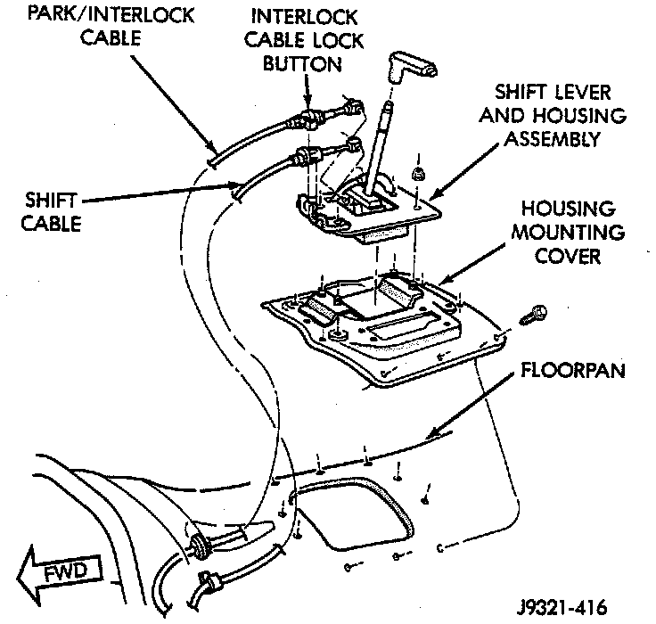

Shift Interlock: Adjustments
NOTE: The park interlock cable is part of the brake/shift lever interlock system. Correct cable adjustment is important to proper interlock operation. The gear shift and park lock cables must both be correctly adjusted in order to shift out of Park.
PARK INTERLOCK CABLE ADJUSTMENT PROCEDURE
1. Shift into Park position.
2. Turn ignition switch to Accessory position. Be sure ignition key cylinder is in Accessory position. Cable will not adjust correctly in any other position.
3. Remove shift lever bezel and console screws. Raise bezel and console for access to park interlock cable.
4. Pull cable lock button up to release cable.
5. Pull cable forward. Then release cable and press lock button down until it snaps in place.
BRAKE TRANSMISSION SHIFT INTERLOCK (BTSI) FUNCTION CHECK
1. Verify removal of ignition key allowed in park position only.
2. When the shift lever is in park, and the shift handle push-button is in the out position, the ignition key cylinder should rotate freely from off to lock. When the shifter is in any other position, the ignition key should not rotate from off to lock.
3. Shifting out of park should be possible when the ignition key cylinder is in the off position.
4. Shifting out of park should not be possible while applying 25 lb. max. handle push-button force, and ignition key cylinder is in the run or start positions, unless the foot brake pedal is depressed approximately 1/2 inch (12 mm).
5. Shifting out of park should not be possible when the ignition key cylinder is in the accessory or lock position.
6. Shifting between any gears neutral or park may be done without depressing foot brake with ignition switch in run or start positions and vehicle stationary or in motion.
7. The floor shifter lever and gate positions should be in alignment with all transmission detent positions.
8. Engine starts must be possible with floor shift lever in park or neutral gate positions only. Engine starts must not be possible in any other gate positions other than park or neutral.
9. With floor shift lever handle push-button not depressed and lever detent in:
- PARK POSITION: apply forward force on center of handle and remove pressure. Engine start must be possible.
- PARK POSITION: apply rearward force on center of handle and remove pressure. Engine start must be possible.
- NEUTRAL POSITION: engine start must be possible.
- NEUTRAL POSITION, ENGINE RUNNING AND BRAKES APPLIED: Apply forward force on center of shift handle. Transmission should not be able to shift into reverse detent.